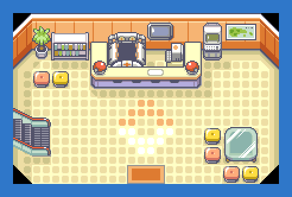
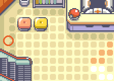

PokémonEMMA'S EMERALD
OFFICIAL Strategy Guide
Lilycove City Pokémon Center 1F
‹ Side questsQuest: The ferry tickets: Southern Island, Mew, Deoxys, Ho-Oh and Lugia (Post-game, LV60+) · 1 of 7Next: Lilycove City Harbor ›
TIP
No wild Pokémon in the grass here. Time of day: M = morning (6–10), D = day (10–19), E = evening (19–20), N = night (20–6).
Event 1: Collect the tickets

Talk to the Concierge (GRAMMY's employee standing by the left wall of any Pokémon Center) and pick FERRY TICKETS (POST-GAME). After the Hall of Fame she gives you all four at once: the EON TICKET, the OLD SEA MAP, the AURORA TICKET and the MYSTIC TICKET. Nothing else is needed.

‹ Side questsQuest: The ferry tickets: Southern Island, Mew, Deoxys, Ho-Oh and Lugia (Post-game, LV60+) · 1 of 7Next: Lilycove City Harbor ›
54